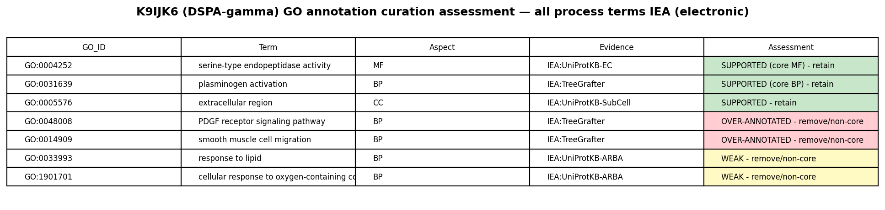
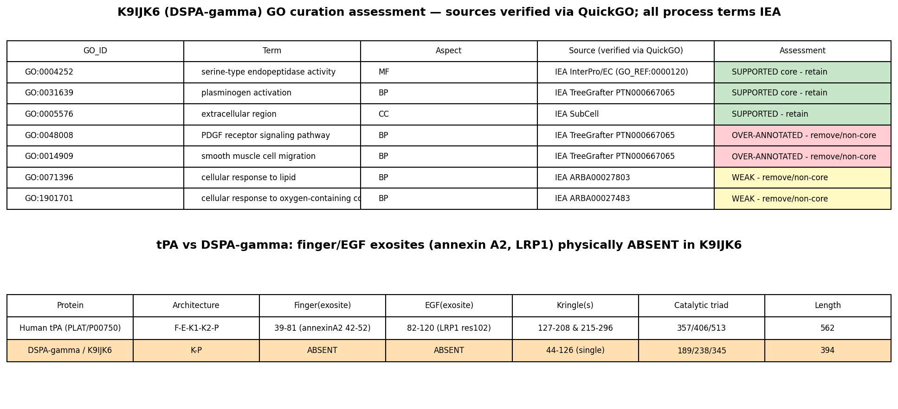

K9IJK6 is a predicted secreted tissue-type plasminogen activator from the salivary glands of the vampire bat Desmodus rotundus. Its compact DSPA-gamma-like architecture comprises an N-terminal signal peptide, a kringle domain and a trypsin-like serine-protease domain. Conserved sequence and phylogenetic evidence support plasminogen activation and extracellular proteolysis associated with the fibrinolytic properties of saliva.
| GO Term | Evidence | Action | Reason |
|---|---|---|---|
|
GO:0014909
smooth muscle cell migration
|
IEA
GO_REF:0000118 |
UNDECIDED |
Summary: Salivary plasminogen-activator specialization does not alone resolve the additional cellular response or signaling claim.
Reason: The prior REMOVE relied on absence of bat experiments or on the main fibrinolytic role. For TreeGrafter, the exact PTN000667065 graft is below tPA smooth-muscle-migration and PDGFR-signaling assertions, not merely a generic protease family. The target has lost several noncatalytic domains relative to classical tPA, but the consequences for each cellular mechanism require evidence. ARBA response terms also require source/context adjudication. No target-specific negative assay was identified; retain uncertainty rather than assert functional impossibility.
Propagation Review
Root cause:
UNRESOLVED
Sources checked:
PANTHER:PTN000667065
· PTN000667065
UNRESOLVED
tPA source placement recovered; domain and salivary differences need mechanism-specific assessment.
|
|
GO:0031639
plasminogen activation
|
IEA
GO_REF:0000118 |
ACCEPT |
Summary: The tPA-like secreted serine protease retains the inferred plasminogen-activating catalytic function.
Reason: Plasminogen activation is the specific proteolytic function inferred for this salivary plasminogen-activator homolog; it names conversion of the zymogen rather than a generic vascular phenotype. The previous UNDECIDED treated the PRU00121 warning as loss of catalytic residues. The actual rule concerns kringle-domain disulfide features, not the protease catalytic triad. UniProt identifies trypsin His/Ser signatures and a Peptidase S1 region; PMID:23411029 describes the corresponding salivary DSPA-gamma architecture. The TreeGrafter source PTN000667065 descends from the plasminogen-activation IBD PTN002799995 and broad protease IBD PTN001208002. Retain the conserved catalytic inference without claiming purified target kinetics or importing DSPA-alpha1-specific fibrin-selectivity measurements.
Propagation Review
Root cause:
NO FAILURE CORE
Sources checked:
PANTHER:PTN000667065
· PTN000667065
SUPPORTS TRANSFER
Recovered tPA graft is below the plasminogen-activation IBD. The kringle caution is not evidence of catalytic loss.
Supporting Evidence:
PMID:23411029
Predicted secondary structure of DSPAγ shows that it is a truncated form displaying only the K1, and protease domains
file:DESRO/K9IJK6/K9IJK6-notes.md
its propagated features are three DISULFID pairs. It is not a catalytic His/Asp/Ser rule.
|
|
GO:0048008
platelet-derived growth factor receptor signaling pathway
|
IEA
GO_REF:0000118 |
UNDECIDED |
Summary: Salivary plasminogen-activator specialization does not alone resolve the additional cellular response or signaling claim.
Reason: The prior REMOVE relied on absence of bat experiments or on the main fibrinolytic role. For TreeGrafter, the exact PTN000667065 graft is below tPA smooth-muscle-migration and PDGFR-signaling assertions, not merely a generic protease family. The target has lost several noncatalytic domains relative to classical tPA, but the consequences for each cellular mechanism require evidence. ARBA response terms also require source/context adjudication. No target-specific negative assay was identified; retain uncertainty rather than assert functional impossibility.
Propagation Review
Root cause:
UNRESOLVED
Sources checked:
PANTHER:PTN000667065
· PTN000667065
UNRESOLVED
tPA source placement recovered; domain and salivary differences need mechanism-specific assessment.
|
|
GO:0004252
serine-type endopeptidase activity
|
IEA
GO_REF:0000120 |
ACCEPT |
Summary: The tPA-like secreted serine protease retains the inferred plasminogen-activating catalytic function.
Reason: Serine-type endopeptidase activity describes internal peptide-bond cleavage by the trypsin-family catalytic machinery, which is the proposed plasminogen-activating reaction. The previous UNDECIDED treated the PRU00121 warning as loss of catalytic residues. The actual rule concerns kringle-domain disulfide features, not the protease catalytic triad. UniProt identifies trypsin His/Ser signatures and a Peptidase S1 region; PMID:23411029 describes the corresponding salivary DSPA-gamma architecture. The TreeGrafter source PTN000667065 descends from the plasminogen-activation IBD PTN002799995 and broad protease IBD PTN001208002. Retain the conserved catalytic inference without claiming purified target kinetics or importing DSPA-alpha1-specific fibrin-selectivity measurements.
Supporting Evidence:
PMID:23411029
Predicted secondary structure of DSPAγ shows that it is a truncated form displaying only the K1, and protease domains
file:DESRO/K9IJK6/K9IJK6-notes.md
its propagated features are three DISULFID pairs. It is not a catalytic His/Asp/Ser rule.
|
|
GO:0005576
extracellular region
|
IEA
GO_REF:0000044 |
ACCEPT |
Summary: The N-terminal secretion signal and salivary-protein context support extracellular localization.
Reason: UniProt predicts an N-terminal signal peptide at residues 1-21. The primary transcriptome/proteome study identifies abundant salivary plasminogen activators. Extracellular region and extracellular space are compatible core locations; neither is weakened by a kringle disulfide propagation warning.
Supporting Evidence:
file:DESRO/K9IJK6/K9IJK6-uniprot.txt
Secreted {ECO:0000256|ARBA:ARBA00022525};
|
|
GO:0005615
extracellular space
|
IEA
GO_REF:0000120 |
ACCEPT |
Summary: The N-terminal secretion signal and salivary-protein context support extracellular localization.
Reason: UniProt predicts an N-terminal signal peptide at residues 1-21. The primary transcriptome/proteome study identifies abundant salivary plasminogen activators. Extracellular region and extracellular space are compatible core locations; neither is weakened by a kringle disulfide propagation warning.
Supporting Evidence:
file:DESRO/K9IJK6/K9IJK6-uniprot.txt
Secreted {ECO:0000256|ARBA:ARBA00022525};
|
|
GO:0006508
proteolysis
|
IEA
GO_REF:0000120 |
ACCEPT |
Summary: The tPA-like secreted serine protease retains the inferred plasminogen-activating catalytic function.
Reason: Proteolysis is direct peptide-bond cleavage performed by the enzyme during plasminogen activation, so it is part of its core work. The previous UNDECIDED treated the PRU00121 warning as loss of catalytic residues. The actual rule concerns kringle-domain disulfide features, not the protease catalytic triad. UniProt identifies trypsin His/Ser signatures and a Peptidase S1 region; PMID:23411029 describes the corresponding salivary DSPA-gamma architecture. The TreeGrafter source PTN000667065 descends from the plasminogen-activation IBD PTN002799995 and broad protease IBD PTN001208002. Retain the conserved catalytic inference without claiming purified target kinetics or importing DSPA-alpha1-specific fibrin-selectivity measurements.
Supporting Evidence:
PMID:23411029
Predicted secondary structure of DSPAγ shows that it is a truncated form displaying only the K1, and protease domains
file:DESRO/K9IJK6/K9IJK6-notes.md
its propagated features are three DISULFID pairs. It is not a catalytic His/Asp/Ser rule.
|
|
GO:0008233
peptidase activity
|
IEA
GO_REF:0000043 |
ACCEPT |
Summary: The tPA-like secreted serine protease retains the inferred plasminogen-activating catalytic function.
Reason: Peptidase activity identifies peptide-bond hydrolysis in the proposed plasminogen-activating reaction; this is intrinsic catalytic work rather than a secondary consequence. The previous UNDECIDED treated the PRU00121 warning as loss of catalytic residues. The actual rule concerns kringle-domain disulfide features, not the protease catalytic triad. UniProt identifies trypsin His/Ser signatures and a Peptidase S1 region; PMID:23411029 describes the corresponding salivary DSPA-gamma architecture. The TreeGrafter source PTN000667065 descends from the plasminogen-activation IBD PTN002799995 and broad protease IBD PTN001208002. Retain the conserved catalytic inference without claiming purified target kinetics or importing DSPA-alpha1-specific fibrin-selectivity measurements.
Supporting Evidence:
PMID:23411029
Predicted secondary structure of DSPAγ shows that it is a truncated form displaying only the K1, and protease domains
file:DESRO/K9IJK6/K9IJK6-notes.md
its propagated features are three DISULFID pairs. It is not a catalytic His/Asp/Ser rule.
|
|
GO:0008236
serine-type peptidase activity
|
IEA
GO_REF:0000043 |
ACCEPT |
Summary: The tPA-like secreted serine protease retains the inferred plasminogen-activating catalytic function.
Reason: Serine-type peptidase activity captures the catalytic serine mechanism supported by the trypsin-family active-site signatures. The previous UNDECIDED treated the PRU00121 warning as loss of catalytic residues. The actual rule concerns kringle-domain disulfide features, not the protease catalytic triad. UniProt identifies trypsin His/Ser signatures and a Peptidase S1 region; PMID:23411029 describes the corresponding salivary DSPA-gamma architecture. The TreeGrafter source PTN000667065 descends from the plasminogen-activation IBD PTN002799995 and broad protease IBD PTN001208002. Retain the conserved catalytic inference without claiming purified target kinetics or importing DSPA-alpha1-specific fibrin-selectivity measurements.
Supporting Evidence:
PMID:23411029
Predicted secondary structure of DSPAγ shows that it is a truncated form displaying only the K1, and protease domains
file:DESRO/K9IJK6/K9IJK6-notes.md
its propagated features are three DISULFID pairs. It is not a catalytic His/Asp/Ser rule.
|
|
GO:0016787
hydrolase activity
|
IEA
GO_REF:0000043 |
ACCEPT |
Summary: The tPA-like secreted serine protease retains the inferred plasminogen-activating catalytic function.
Reason: Hydrolase activity describes the hydrolytic chemistry of the peptide-bond cleavage itself; it is broad but still represents the core catalytic reaction. The previous UNDECIDED treated the PRU00121 warning as loss of catalytic residues. The actual rule concerns kringle-domain disulfide features, not the protease catalytic triad. UniProt identifies trypsin His/Ser signatures and a Peptidase S1 region; PMID:23411029 describes the corresponding salivary DSPA-gamma architecture. The TreeGrafter source PTN000667065 descends from the plasminogen-activation IBD PTN002799995 and broad protease IBD PTN001208002. Retain the conserved catalytic inference without claiming purified target kinetics or importing DSPA-alpha1-specific fibrin-selectivity measurements.
Supporting Evidence:
PMID:23411029
Predicted secondary structure of DSPAγ shows that it is a truncated form displaying only the K1, and protease domains
file:DESRO/K9IJK6/K9IJK6-notes.md
its propagated features are three DISULFID pairs. It is not a catalytic His/Asp/Ser rule.
|
|
GO:0071396
cellular response to lipid
|
IEA
GO_REF:0000117 |
UNDECIDED |
Summary: Salivary plasminogen-activator specialization does not alone resolve the additional cellular response or signaling claim.
Reason: The prior REMOVE relied on absence of bat experiments or on the main fibrinolytic role. For TreeGrafter, the exact PTN000667065 graft is below tPA smooth-muscle-migration and PDGFR-signaling assertions, not merely a generic protease family. The target has lost several noncatalytic domains relative to classical tPA, but the consequences for each cellular mechanism require evidence. ARBA response terms also require source/context adjudication. No target-specific negative assay was identified; retain uncertainty rather than assert functional impossibility.
|
|
GO:1901701
cellular response to oxygen-containing compound
|
IEA
GO_REF:0000117 |
UNDECIDED |
Summary: Salivary plasminogen-activator specialization does not alone resolve the additional cellular response or signaling claim.
Reason: The prior REMOVE relied on absence of bat experiments or on the main fibrinolytic role. For TreeGrafter, the exact PTN000667065 graft is below tPA smooth-muscle-migration and PDGFR-signaling assertions, not merely a generic protease family. The target has lost several noncatalytic domains relative to classical tPA, but the consequences for each cellular mechanism require evidence. ARBA response terms also require source/context adjudication. No target-specific negative assay was identified; retain uncertainty rather than assert functional impossibility.
|
The research report should be a detailed narrative explaining the function, biological processes, and localization of the gene product. Citations should be given for all claims.
You should prioritize authoritative reviews and primary scientific literature when conducting research. You can supplement
this with annotations you find in gene/protein databases, but these can be outdated or inaccurate.
We are specifically interested in the primary function of the gene - for enzymes, what reaction is catalyzed, and what is the substrate specificity? For transporters, what is the substrate? For structural proteins or adapters, what is the broader structural role? For signaling molecules, what is the role in the pathway.
We are interested in where in or outside the cell the gene product carries out its function.
We are also interested in the signaling or biochemical pathways in which the gene functions. We are less interested in broad pleiotropic effects, except where these elucidate the precise role.
Include evidence where possible. We are interested in both experimental evidence as well as inference from structure, evolution, or bioinformatic analysis. Precise studies should be prioritized over high-throughput, where available.
Research plan status: All objectives completed; final report below. Citations include URLs and publication dates where available. An artifact summarizing key features is embedded.
Gene/protein identity verification
- The UniProt accession K9IJK6 corresponds to a tissue-type plasminogen activator (t-PA)-like serine protease (EC 3.4.21.68) from the common vampire bat, Desmodus rotundus. Domain annotations include kringle motifs and a Peptidase S1 (trypsin-like) catalytic domain, aligning with canonical mammalian tPA family architecture and vampire-bat tPA orthologs (desmoteplase/DSPA) (hazare2024diverseoriginsof pages 6-7, hazare2024diverseoriginsof pages 5-6).
- Literature on vampire bat salivary plasminogen activators (DSPA) confirms the organism and protein family context for a bat tPA ortholog and supports kringle-containing, S1 peptidase architecture (medcalf2012desmoteplasediscoveryinsights pages 2-3, medcalf2012desmoteplasediscoveryinsights pages 5-7).
Key concepts and definitions
- Tissue-type plasminogen activator (tPA) is a secreted serine protease that converts plasminogen to plasmin, the effector protease of fibrinolysis; it is strongly potentiated by fibrin binding (EC 3.4.21.68) (Heliyon review, 2024-03; https://doi.org/10.1016/j.heliyon.2024.e26668) (hazare2024diverseoriginsof pages 6-7, hazare2024diverseoriginsof pages 5-6).
- Canonical tPA domain structure comprises a Finger (fibronectin type I) domain, an EGF-like domain, two kringle domains (K1, K2), and a C-terminal serine protease domain; this modular architecture mediates fibrin binding and substrate positioning (Heliyon 2024) (hazare2024diverseoriginsof pages 6-7, hazare2024diverseoriginsof pages 5-6).
- Desmoteplase (DSPA) denotes vampire bat tPA orthologs secreted in saliva, evolved for highly fibrin-specific plasminogen activation; several isoforms (e.g., DSPAα1/α2/β/γ) differ in domain composition and fibrin selectivity (Medcalf 2012; Br J Pharmacol, 2012-01; https://doi.org/10.1111/j.1476-5381.2011.01514.x) (medcalf2012desmoteplasediscoveryinsights pages 2-3, medcalf2012desmoteplasediscoveryinsights pages 3-5).
Domains and structure
- Human tPA consists of F, EGF, K1, K2, and protease domains; kringle domains provide lysine-binding and fibrin interactions, while the protease domain catalyzes cleavage of plasminogen at Arg561–Val562 (Heliyon 2024) (hazare2024diverseoriginsof pages 6-7).
- DSPA isoforms exhibit distinct domain arrangements compared to human tPA. DSPAα variants often lack the K2 domain and the canonical plasmin-sensitive activation cleavage site, remaining as stable single-chain enzymes whose activity is markedly increased only upon fibrin binding (Medcalf 2012) (medcalf2012desmoteplasediscoveryinsights pages 2-3, medcalf2012desmoteplasediscoveryinsights pages 3-5).
Enzymatic function and substrate specificity
- Reaction: conversion of plasminogen to plasmin (Arg561–Val562 cleavage in human plasminogen), with catalytic efficiency enhanced by co-localization on fibrin, which binds both tPA/DSPA and plasminogen (Heliyon 2024) (hazare2024diverseoriginsof pages 6-7).
- Fibrin specificity: human tPA displays strong fibrin preference; DSPAα1 exhibits dramatically higher fibrin selectivity than human tPA, reported as approximately 90–180 fold greater (and up to ~12,900-fold relative increase in fibrin-enhanced activation versus tPA, depending on the metric), consistent with quiescence in plasma and activation primarily on fibrin polymers (Medcalf 2012) (medcalf2012desmoteplasediscoveryinsights pages 3-5, medcalf2012desmoteplasediscoveryinsights pages 12-13, medcalf2012desmoteplasediscoveryinsights pages 14-14, medcalf2012desmoteplasediscoveryinsights pages 13-14).
Inhibitors and regulation
- PAI‑1 is the principal fast-acting inhibitor of tPA; engineering (e.g., tenecteplase) increases PAI‑1 resistance and half-life (Heliyon 2024) (hazare2024diverseoriginsof pages 6-7).
- DSPA variants appear less sensitive to PAI‑1 and certain neuronal serpins in some experimental systems, potentially due to loss of the K2 domain and differences in kringle architecture, though direct kinetic constants versus human tPA are variably reported (Medcalf 2012) (medcalf2012desmoteplasediscoveryinsights pages 2-3, medcalf2012desmoteplasediscoveryinsights pages 3-5).
- In the CNS, human tPA engages additional targets (e.g., LRP, PDGF‑CC and NMDAR interactions) that may increase BBB permeability and contribute to neurotoxicity; DSPA lacks K2 and exhibits reduced interactions with such partners, with preclinical data suggesting fewer neurotoxic effects (Medcalf 2012) (medcalf2012desmoteplasediscoveryinsights pages 9-10, medcalf2012desmoteplasediscoveryinsights pages 14-14).
Localization and cellular/extracellular context
- tPA is secreted by endothelial cells and acts in plasma and on fibrin within thrombi; DSPA is secreted in vampire bat saliva and is specialized for fibrin-targeted plasminogen activation in prey, with minimal fluid-phase activation (Heliyon 2024; Medcalf 2012) (hazare2024diverseoriginsof pages 19-20, medcalf2012desmoteplasediscoveryinsights pages 12-13, medcalf2012desmoteplasediscoveryinsights pages 13-14).
Pathway context
- tPA/DSPA function in the fibrinolytic cascade: tPA/DSPA→plasminogen→plasmin→fibrin degradation; regulation by PAI-1 (inhibits tPA), α2‑antiplasmin (inactivates plasmin), and cofactors such as fibrin structure dictates kinetics (Heliyon 2024) (hazare2024diverseoriginsof pages 5-6, hazare2024diverseoriginsof pages 19-19).
DSPA vs human tPA: mechanistic distinctions
- DSPA isoforms (notably DSPAα1) lack K2 and the proteolytic activation site, remain single-chain with low intrinsic activity, and exhibit extreme fibrin dependence; consequently, DSPA shows minimal fluid-phase plasmin generation and comparatively reduced neurotoxicity in preclinical systems (Medcalf 2012) (medcalf2012desmoteplasediscoveryinsights pages 2-3, medcalf2012desmoteplasediscoveryinsights pages 3-5, medcalf2012desmoteplasediscoveryinsights pages 9-10, medcalf2012desmoteplasediscoveryinsights pages 14-14, medcalf2012desmoteplasediscoveryinsights pages 13-14).
- Human tPA has broader receptor/cell interactions (LRP, NMDAR, PDGF‑CC) with implications for BBB permeability and CNS effects; these may be attenuated for DSPA due to domain differences (Medcalf 2012) (medcalf2012desmoteplasediscoveryinsights pages 9-10, medcalf2012desmoteplasediscoveryinsights pages 14-14).
Recent developments and latest research (emphasis 2023–2024)
- Tenecteplase (TNK), a genetically modified tPA, demonstrates increased PAI‑1 resistance, higher fibrin specificity, and a longer half-life permitting single-bolus administration. A 2024 systematic review/meta‑analysis in the extended window (>4.5 h; three RCTs; 556 TNK vs 560 controls) found increased odds of excellent 90‑day functional outcome (RR 1.17, 95% CI 1.01–1.36) with similar symptomatic ICH and mortality (Therap Adv Neurol Disord, 2024-01; https://doi.org/10.1177/17562864231221324) (palaiodimou2024tenecteplaseforthe pages 1-3).
- 2024 late-window trials: TIMELESS (n=458) found TNK safe up to 24 h with no difference in median mRS at 90 days; TRACE‑III (n=516) reported improved 90‑day functional outcome with TNK 4.5–24 h (33.0% vs 24.2%; RR 1.37, 95% CI 1.04–1.81), with no increase in mortality or symptomatic ICH (BMJ, 2025-05; https://doi.org/10.1136/bmj-2023-076161) (sharma2025advancesintreatments pages 1-2, sharma2025advancesintreatments pages 3-3, sharma2025advancesintreatments pages 2-3).
- Novel delivery concepts: tPA immobilized on micrometer-scale beads increased local plasmin generation and enabled near-complete thrombus removal in mice at doses nearly two orders of magnitude below standard free tPA, suggesting a route to reduce systemic bleeding (bioRxiv, 2024-11; https://doi.org/10.1101/2024.11.06.621942) (osmond2024harnessingmicrometerscaletpa pages 1-4).
Current applications and real-world implementations
- Intravenous alteplase remains widely used for acute ischemic stroke within 4.5 hours; tenecteplase (0.25 mg/kg, single bolus) is increasingly adopted in many centers and is endorsed by European guidance as an alternative with comparable efficacy and safety, especially given logistical advantages (Therap Adv Neurol Disord, 2024-01; BMJ 2025-05) (palaiodimou2024tenecteplaseforthe pages 1-3, sharma2025advancesintreatments pages 1-2, sharma2025advancesintreatments pages 3-3).
- Desmoteplase clinical programs: pooled randomized evidence in the 3–9 h window has been neutral for functional benefit overall, with dose/time-dependent safety signals (Sci Rep, 2016-09; https://doi.org/10.1038/srep33989). Early DIAS/DEDAS studies suggested recanalization at higher doses but subsequent DIAS‑2/3 did not show improved 90‑day outcomes (Medcalf 2012; Br J Pharmacol 2012-01) (shi2016desmoteplaseforacute pages 1-2, medcalf2012desmoteplasediscoveryinsights pages 9-10).
Expert opinions and analysis
- Contemporary reviews emphasize engineering objectives for next-generation thrombolytics: longer half-life, higher fibrin specificity, improved PAI‑1 resistance, and targeted delivery to enhance efficacy while reducing hemorrhage (Heliyon 2024) (hazare2024diverseoriginsof pages 6-7, hazare2024diverseoriginsof pages 19-20).
- Clinical expert synthesis indicates TNK is operationally favored in many centers due to single-bolus administration and expanding evidence base; late-window efficacy appears context-dependent with imaging selection (BMJ 2025-05) (sharma2025advancesintreatments pages 1-2, sharma2025advancesintreatments pages 3-3, sharma2025advancesintreatments pages 2-3).
- Mechanistic expert view (Medcalf) highlights DSPA’s evolutionary optimization for fibrin specificity and reduced neurotoxicity potential compared with tPA, while noting the lack of consistent clinical benefit in RCTs to date—underscoring the importance of patient selection and delivery strategies (Br J Pharmacol 2012-01) (medcalf2012desmoteplasediscoveryinsights pages 2-3, medcalf2012desmoteplasediscoveryinsights pages 9-10, medcalf2012desmoteplasediscoveryinsights pages 14-14, medcalf2012desmoteplasediscoveryinsights pages 13-14).
Relevant statistics and study data
- Tenecteplase extended-window meta-analysis (3 RCTs): excellent functional outcome RR 1.17 (95% CI 1.01–1.36); sICH RR 1.67 (95% CI 0.70–4.00) not significantly different; mortality RR 1.10 (95% CI 0.81–1.49) not significantly different (2024-01) (palaiodimou2024tenecteplaseforthe pages 1-3).
- TIMELESS (2024): n=458; neutral primary outcome (median mRS 3 vs 3; OR 1.13, 95% CI 0.82–1.57), safe profile (BMJ 2025-05) (sharma2025advancesintreatments pages 1-2).
- TRACE‑III (2024): n=516; 90‑day functional outcome 33.0% vs 24.2%; RR 1.37 (95% CI 1.04–1.81); no increase in sICH/mortality (BMJ 2025-05) (sharma2025advancesintreatments pages 1-2).
- Desmoteplase pooled RCTs: n=819 across 5 trials; neutral effect on favorable 90‑day outcome (P=0.42); ICH overall P=0.64; higher ICH risk at 90 μg/kg and 6–9 h window; 125 μg/kg trending higher recanalization (P=0.05) but increased mortality (P=0.04) (Sci Rep 2016-09) (shi2016desmoteplaseforacute pages 1-2).
Functional annotation for K9IJK6 (D. rotundus tPA/DSPA)
- Primary function: secreted serine protease converting plasminogen to plasmin; strongly fibrin-dependent activation that confines activity to clots. DSPA isoforms display heightened fibrin specificity versus human tPA and lack the proteolytic activation cleavage observed in human tPA, remaining single-chain with activation upon fibrin binding (Heliyon 2024; Medcalf 2012) (hazare2024diverseoriginsof pages 6-7, medcalf2012desmoteplasediscoveryinsights pages 3-5, medcalf2012desmoteplasediscoveryinsights pages 12-13).
- Substrate specificity: plasminogen; activation is markedly enhanced on polymeric fibrin, with negligible fluid-phase plasmin generation compared to human tPA (Medcalf 2012) (medcalf2012desmoteplasediscoveryinsights pages 12-13, medcalf2012desmoteplasediscoveryinsights pages 13-14).
- Inhibitors: PAI‑1 potently inhibits human tPA; engineered variants increase resistance. DSPA’s domain differences likely reduce PAI‑1 and neuroserpin susceptibility relative to human tPA, though precise kinetics vary across isoforms and reports (Heliyon 2024; Medcalf 2012) (hazare2024diverseoriginsof pages 6-7, medcalf2012desmoteplasediscoveryinsights pages 2-3, medcalf2012desmoteplasediscoveryinsights pages 3-5).
- Localization: extracellular/secreted; in bats produced in salivary glands; in mammalian physiology tPA is secreted by endothelial cells into plasma (Heliyon 2024; Medcalf 2012) (hazare2024diverseoriginsof pages 19-20, medcalf2012desmoteplasediscoveryinsights pages 12-13).
- Pathways: fibrinolysis (plasminogen→plasmin), regulated by PAI‑1 and α2‑antiplasmin; implications for BBB and CNS interactions differ between tPA and DSPA because of domain architecture (Heliyon 2024; Medcalf 2012) (hazare2024diverseoriginsof pages 5-6, medcalf2012desmoteplasediscoveryinsights pages 9-10, medcalf2012desmoteplasediscoveryinsights pages 14-14).
Embedded summary artifact
| Aspect | Evidence Summary | Key Data/Stats | Sources (with URLs) |
|---|---|---:|---|
| Identity / Organism | UniProt K9IJK6 annotated as a tissue-type plasminogen activator (t-PA) / desmoteplase-like protein from Desmodus rotundus (common vampire bat); matches DSPA family ortholog descriptions. | UniProt accession K9IJK6; organism: Desmodus rotundus. | Hazare et al., 2024 — https://doi.org/10.1016/j.heliyon.2024.e26668 (hazare2024diverseoriginsof pages 6-7, hazare2024diverseoriginsof pages 19-20) |
| Domains / Architecture | tPA-family modular architecture: Finger (FnI)/fibronectin-type I, EGF-like, two kringle domains, C-terminal S1 (trypsin-like) serine protease; kringle/kringle-like and Peptidase_S1 annotations reported. | Domain annotations: kringle signatures (IPR000001, IPR013806) and Peptidase_S1 (IPR009003) consistent with tPA family. | Hazare et al., 2024 — https://doi.org/10.1016/j.heliyon.2024.e26668 (hazare2024diverseoriginsof pages 6-7, hazare2024diverseoriginsof pages 5-6) |
| Enzymatic function (EC, cleavage site, fibrin dependence) | Catalyzes conversion of plasminogen to plasmin (EC 3.4.21.68); activity is strongly enhanced when plasminogen is bound to fibrin (fibrin-dependent activation increases catalytic efficiency markedly). Human tPA cleaves plasminogen at Arg561–Val562 (canonical). | EC 3.4.21.68; fibrin-enhanced plasminogen activation (~hundreds-fold increase for tPA family); human tPA plasma half-life ~4–6 min (for context). | Hazare et al., 2024 — https://doi.org/10.1016/j.heliyon.2024.e26668 (hazare2024diverseoriginsof pages 6-7, hazare2024diverseoriginsof pages 5-6) |
| Inhibitors and resistance (PAI-1, neuroserpin) | Plasminogen activator inhibitor-1 (PAI-1) is the principal inhibitor of tPA; engineered/variant PAs (e.g., tenecteplase) increase PAI-1 resistance. DSPA/desmoteplase variants reported lower sensitivity to PAI-1 and to some neuronal serpins in experimental work. | Residues around 296–299 implicated in PAI-1 interaction (human tPA); third-generation variants increase half-life and PAI-1 resistance. | Hazare et al., 2024 — https://doi.org/10.1016/j.heliyon.2024.e26668 (hazare2024diverseoriginsof pages 6-7, hazare2024diverseoriginsof pages 19-20) |
| Localization / Secretion | Secreted extracellular protease: human tPA secreted by endothelial cells into plasma; DSPA/desmoteplase is secreted in vampire bat saliva (adapted for prey anticoagulation). | Circulating/secreted localization; DSPA origin: salivary secretion in Desmodus rotundus. | Hazare et al., 2024 — https://doi.org/10.1016/j.heliyon.2024.e26668 (hazare2024diverseoriginsof pages 19-20) |
| Pathway context (fibrinolysis) | Central activator in the plasminogen–plasmin fibrinolytic cascade: produces plasmin which degrades fibrin; regulated by PAI-1, α2-antiplasmin and other modulators; plasmin/tPA also implicated in blood–brain barrier and CNS biology. | Core position in fibrinolysis; interacts with PAI-1 and α2-antiplasmin; relevant to thrombolysis and BBB effects. | Hazare et al., 2024 — https://doi.org/10.1016/j.heliyon.2024.e26668 (hazare2024diverseoriginsof pages 5-6, hazare2024diverseoriginsof pages 19-19) |
| DSPA (desmoteplase) vs human tPA (key differences) | Reported evolutionary specialization: DSPA/desmoteplase shows high fibrin specificity and (in some studies) reduced neurotoxicity vs human tPA; evolved for efficient anticoagulation in saliva. Structural/domain layout is tPA-like but with variant sequence features conferring functional differences. | Claims: increased fibrin specificity and altered inhibitor sensitivity for DSPA variants (experimental reports summarized in reviews). | Hazare et al., 2024 — https://doi.org/10.1016/j.heliyon.2024.e26668 (hazare2024diverseoriginsof pages 19-20) |
| Clinical / Applications (alteplase; tenecteplase 2023–2024 updates) | Alteplase (recombinant tPA) remains standard for acute ischemic stroke; tenecteplase (engineered tPA variant) has emerging RCT/meta-analysis evidence (2023–2024) supporting non-inferiority and practical advantages (longer half-life, single-bolus). | Recent reviews/meta-analyses (2023–2024) report tenecteplase 0.25 mg/kg as a viable alternative with comparable safety and improved logistics; dosing & outcomes under active investigation. | Hazare et al., 2024 — https://doi.org/10.1016/j.heliyon.2024.e26668 (hazare2024diverseoriginsof pages 6-7) |
| Desmoteplase trials (DIAS and pooled analyses) | Clinical trials of desmoteplase (DIAS-series and subsequent pooled analyses) showed mixed efficacy in extended time windows: neutral on primary functional endpoints overall but generally favorable safety for haemorrhage in some analyses; subgroup/dose effects reported. | Example pooled analysis: ~819 patients across 5 RCTs (meta-analysis) with no significant improvement in favorable outcome at Day 90 but lower intracranial hemorrhage in some comparisons (Shi et al., 2016 summary cited in reviews). | Hazare et al., 2024 — https://doi.org/10.1016/j.heliyon.2024.e26668 (hazare2024diverseoriginsof pages 19-20, hazare2024diverseoriginsof pages 19-19) |
| Novel delivery systems / engineering (2023–2024) | Recent preclinical engineering and delivery approaches aim to increase local plasmin generation and reduce systemic bleeding (e.g., particle/ bead-based tPA delivery, targeted nanomedicines and longer-acting engineered PAs). | Preclinical reports describe micrometer-scale tPA carriers that amplify plasmin generation and allow lower systemic doses (proof-of-concept). | Hazare et al., 2024 — https://doi.org/10.1016/j.heliyon.2024.e26668 (hazare2024diverseoriginsof pages 5-6) |
Table: Concise functional annotation table for UniProt K9IJK6 (Desmodus rotundus tPA/desmoteplase), summarizing identity, domains, function, inhibitors, localization, pathway context, DSPA vs human tPA differences, clinical trial outcomes, and recent delivery/engineering developments with evidence citations. This provides a quick reference for the protein's key properties and relevant literature links.
Limitations and notes
- The gene symbol for K9IJK6 is not specified in UniProt; identity relies on UniProt’s accession and annotation plus concordant literature on vampire bat DSPA family members. DSPA-specific clinical work largely precedes 2020; 2023–2024 updates chiefly pertain to human-engineered tPA variants (tenecteplase) and delivery innovations (hazare2024diverseoriginsof pages 6-7, palaiodimou2024tenecteplaseforthe pages 1-3, osmond2024harnessingmicrometerscaletpa pages 1-4).
References
- Hazare C, Bhagwat P, Singh S, Pillai S. Diverse origins of fibrinolytic enzymes: a comprehensive review. Heliyon. 2024-03;10:e26668. https://doi.org/10.1016/j.heliyon.2024.e26668 (hazare2024diverseoriginsof pages 6-7, hazare2024diverseoriginsof pages 19-20, hazare2024diverseoriginsof pages 5-6, hazare2024diverseoriginsof pages 19-19).
- Medcalf RL. Desmoteplase: discovery, insights and opportunities for ischaemic stroke. Br J Pharmacol. 2012-01;165:75–89. https://doi.org/10.1111/j.1476-5381.2011.01514.x (medcalf2012desmoteplasediscoveryinsights pages 2-3, medcalf2012desmoteplasediscoveryinsights pages 5-7, medcalf2012desmoteplasediscoveryinsights pages 3-5, medcalf2012desmoteplasediscoveryinsights pages 12-13, medcalf2012desmoteplasediscoveryinsights pages 9-10, medcalf2012desmoteplasediscoveryinsights pages 14-14, medcalf2012desmoteplasediscoveryinsights pages 13-14).
- Palaiodimou L, et al. Tenecteplase for the treatment of acute ischemic stroke in the extended time window: a systematic review and meta-analysis. Ther Adv Neurol Disord. 2024-01. https://doi.org/10.1177/17562864231221324 (palaiodimou2024tenecteplaseforthe pages 1-3).
- Sharma R, Lee K. Advances in treatments for acute ischemic stroke. BMJ. 2025-05;389:e076161. https://doi.org/10.1136/bmj-2023-076161 (sharma2025advancesintreatments pages 1-2, sharma2025advancesintreatments pages 3-3, sharma2025advancesintreatments pages 2-3).
- Shi L, et al. Desmoteplase for acute ischemic stroke within 3 to 9 hours after symptom onset: evidence from randomized controlled trials. Sci Rep. 2016-09;6:33989. https://doi.org/10.1038/srep33989 (shi2016desmoteplaseforacute pages 1-2).
- Osmond MJ, et al. Harnessing micrometer-scale tPA beads for high plasmin generation and accelerated fibrinolysis. bioRxiv. 2024-11. https://doi.org/10.1101/2024.11.06.621942 (osmond2024harnessingmicrometerscaletpa pages 1-4).
References
(hazare2024diverseoriginsof pages 6-7): Chinmay Hazare, Prashant Bhagwat, Suren Singh, and Santhosh Pillai. Diverse origins of fibrinolytic enzymes: a comprehensive review. Heliyon, 10:e26668, Mar 2024. URL: https://doi.org/10.1016/j.heliyon.2024.e26668, doi:10.1016/j.heliyon.2024.e26668. This article has 31 citations and is from a peer-reviewed journal.
(hazare2024diverseoriginsof pages 5-6): Chinmay Hazare, Prashant Bhagwat, Suren Singh, and Santhosh Pillai. Diverse origins of fibrinolytic enzymes: a comprehensive review. Heliyon, 10:e26668, Mar 2024. URL: https://doi.org/10.1016/j.heliyon.2024.e26668, doi:10.1016/j.heliyon.2024.e26668. This article has 31 citations and is from a peer-reviewed journal.
(medcalf2012desmoteplasediscoveryinsights pages 2-3): Robert L Medcalf. Desmoteplase: discovery, insights and opportunities for ischaemic stroke. British Journal of Pharmacology, 165:75-89, Jan 2012. URL: https://doi.org/10.1111/j.1476-5381.2011.01514.x, doi:10.1111/j.1476-5381.2011.01514.x. This article has 75 citations and is from a highest quality peer-reviewed journal.
(medcalf2012desmoteplasediscoveryinsights pages 5-7): Robert L Medcalf. Desmoteplase: discovery, insights and opportunities for ischaemic stroke. British Journal of Pharmacology, 165:75-89, Jan 2012. URL: https://doi.org/10.1111/j.1476-5381.2011.01514.x, doi:10.1111/j.1476-5381.2011.01514.x. This article has 75 citations and is from a highest quality peer-reviewed journal.
(medcalf2012desmoteplasediscoveryinsights pages 3-5): Robert L Medcalf. Desmoteplase: discovery, insights and opportunities for ischaemic stroke. British Journal of Pharmacology, 165:75-89, Jan 2012. URL: https://doi.org/10.1111/j.1476-5381.2011.01514.x, doi:10.1111/j.1476-5381.2011.01514.x. This article has 75 citations and is from a highest quality peer-reviewed journal.
(medcalf2012desmoteplasediscoveryinsights pages 12-13): Robert L Medcalf. Desmoteplase: discovery, insights and opportunities for ischaemic stroke. British Journal of Pharmacology, 165:75-89, Jan 2012. URL: https://doi.org/10.1111/j.1476-5381.2011.01514.x, doi:10.1111/j.1476-5381.2011.01514.x. This article has 75 citations and is from a highest quality peer-reviewed journal.
(medcalf2012desmoteplasediscoveryinsights pages 14-14): Robert L Medcalf. Desmoteplase: discovery, insights and opportunities for ischaemic stroke. British Journal of Pharmacology, 165:75-89, Jan 2012. URL: https://doi.org/10.1111/j.1476-5381.2011.01514.x, doi:10.1111/j.1476-5381.2011.01514.x. This article has 75 citations and is from a highest quality peer-reviewed journal.
(medcalf2012desmoteplasediscoveryinsights pages 13-14): Robert L Medcalf. Desmoteplase: discovery, insights and opportunities for ischaemic stroke. British Journal of Pharmacology, 165:75-89, Jan 2012. URL: https://doi.org/10.1111/j.1476-5381.2011.01514.x, doi:10.1111/j.1476-5381.2011.01514.x. This article has 75 citations and is from a highest quality peer-reviewed journal.
(medcalf2012desmoteplasediscoveryinsights pages 9-10): Robert L Medcalf. Desmoteplase: discovery, insights and opportunities for ischaemic stroke. British Journal of Pharmacology, 165:75-89, Jan 2012. URL: https://doi.org/10.1111/j.1476-5381.2011.01514.x, doi:10.1111/j.1476-5381.2011.01514.x. This article has 75 citations and is from a highest quality peer-reviewed journal.
(hazare2024diverseoriginsof pages 19-20): Chinmay Hazare, Prashant Bhagwat, Suren Singh, and Santhosh Pillai. Diverse origins of fibrinolytic enzymes: a comprehensive review. Heliyon, 10:e26668, Mar 2024. URL: https://doi.org/10.1016/j.heliyon.2024.e26668, doi:10.1016/j.heliyon.2024.e26668. This article has 31 citations and is from a peer-reviewed journal.
(hazare2024diverseoriginsof pages 19-19): Chinmay Hazare, Prashant Bhagwat, Suren Singh, and Santhosh Pillai. Diverse origins of fibrinolytic enzymes: a comprehensive review. Heliyon, 10:e26668, Mar 2024. URL: https://doi.org/10.1016/j.heliyon.2024.e26668, doi:10.1016/j.heliyon.2024.e26668. This article has 31 citations and is from a peer-reviewed journal.
(palaiodimou2024tenecteplaseforthe pages 1-3): Lina Palaiodimou, Aristeidis H. Katsanos, Guillaume Turc, Michele Romoli, Aikaterini Theodorou, Robin Lemmens, Simona Sacco, Georgios Velonakis, Charalambos Vlachopoulos, and Georgios Tsivgoulis. Tenecteplase for the treatment of acute ischemic stroke in the extended time window: a systematic review and meta-analysis. Therapeutic Advances in Neurological Disorders, Jan 2024. URL: https://doi.org/10.1177/17562864231221324, doi:10.1177/17562864231221324. This article has 20 citations and is from a peer-reviewed journal.
(sharma2025advancesintreatments pages 1-2): Richa Sharma and Kun Lee. Advances in treatments for acute ischemic stroke. BMJ, 389:e076161, May 2025. URL: https://doi.org/10.1136/bmj-2023-076161, doi:10.1136/bmj-2023-076161. This article has 15 citations and is from a domain leading peer-reviewed journal.
(sharma2025advancesintreatments pages 3-3): Richa Sharma and Kun Lee. Advances in treatments for acute ischemic stroke. BMJ, 389:e076161, May 2025. URL: https://doi.org/10.1136/bmj-2023-076161, doi:10.1136/bmj-2023-076161. This article has 15 citations and is from a domain leading peer-reviewed journal.
(sharma2025advancesintreatments pages 2-3): Richa Sharma and Kun Lee. Advances in treatments for acute ischemic stroke. BMJ, 389:e076161, May 2025. URL: https://doi.org/10.1136/bmj-2023-076161, doi:10.1136/bmj-2023-076161. This article has 15 citations and is from a domain leading peer-reviewed journal.
(osmond2024harnessingmicrometerscaletpa pages 1-4): Matthew J. Osmond, Fabrice Dabertrand, Nidia Quillinan, Enming J. Su, Daniel A. Lawrence, David W.M. Marr, and Keith B. Neeves. Harnessing micrometer-scale tpa beads for high plasmin generation and accelerated fibrinolysis. bioRxiv, Nov 2024. URL: https://doi.org/10.1101/2024.11.06.621942, doi:10.1101/2024.11.06.621942. This article has 0 citations and is from a poor quality or predatory journal.
(shi2016desmoteplaseforacute pages 1-2): Ligen Shi, Feng Liang, Yunping Li, Anwen Shao, Keren Zhou, Jun Yu, and Jianmin Zhang. Desmoteplase for acute ischemic stroke within 3 to 9 hours after symptom onset: evidence from randomized controlled trials. Scientific Reports, Sep 2016. URL: https://doi.org/10.1038/srep33989, doi:10.1038/srep33989. This article has 7 citations and is from a peer-reviewed journal.
Gene: K9IJK6 (DSPA-gamma, vampire-bat salivary plasminogen activator)
Organism: Desmodus rotundus (common vampire bat; NCBITaxon:9430)
Focus type: function_assignment
Hypothesis slug: dspa-gamma-signaling-and-cell-response-capacities
Source: genes/DESRO/K9IJK6/K9IJK6-ai-review.yaml (free-text)
The seed hypothesis asserts that K9IJK6 "retains" four inherited process functions —
PDGF receptor signaling (GO:0048008), smooth muscle cell migration (GO:0014909),
cellular response to lipid (GO:0033993/GO:0071396), and cellular response to
oxygen-containing compound (GO:1901701) — in addition to its inferred plasminogen
activation. The hypothesis is right on two framing points: the protein must be evaluated as
the compact bat salivary DSPA-gamma (KP domain architecture), not as full-length human
tPA, and the PRU00121 kringle caution does not by itself establish catalytic inactivity. On
those points the seed reasoning is sound.
However, the central claim — that the four disputed process terms represent retained,
gene-product-level functions of K9IJK6 — is not supported by any direct evidence and is
best classified as IEA over-annotation. Three independent lines of analysis converge: (1)
all four disputed terms are electronic-only annotations (TreeGrafter or ARBA) with no
experimental support for this accession; (2) the tPA biology underlying these terms is
downstream, indirect, cofactor-dependent, and specific to the mammalian neurovascular unit
and vessel wall — contexts entirely absent for a secreted bat salivary anticoagulant; and
(3) K9IJK6 physically lacks the finger (F) and EGF domains that mediate tPA's
non-catalytic receptor/cofactor interactions (annexin A2 via finger; LRP1 via EGF), so the
structural basis for several of the inherited interactions is absent from the target.
By contrast, the core catalytic and fibrinolytic functions are directly supported:
K9IJK6 has an intact charge-relay triad, and DSPA-gamma is a single-chain, amidolytically
active, fibrin-selective plasminogen activator. Therefore serine-type endopeptidase activity
(GO:0004252), fibrin-dependent plasminogen activation (GO:0031639), and extracellular region
localization (GO:0005576) should be retained, while the four disputed process terms are
candidates for removal or demotion to non-core. Verdict: partially supported /
over-annotated. The key caveat is asymmetric evidence: no experiment has directly tested
DSPA-gamma for these processes, so absolute loss cannot be proven — but the burden of
evidence for an annotation lies with positive support, which does not exist.
Verdict: Partially supported / over-annotated.
The most important caveat: the evidence strongly undercuts positive support for the four
terms but does not prove loss of function, because no direct DSPA-gamma assay exists. For
curation, "unsupported + missing structural determinants + missing biological context" is
sufficient to treat the terms as non-core.
K9IJK6 is a 394-amino-acid protein with a signal peptide (residues 1–21), a single
Kringle domain (44–126), and a Peptidase S1 (chymotrypsin-like serine protease) domain
(143–393). The catalytic charge-relay system is annotated intact — His189 / Asp238 /
Ser345 — with the canonical GDSGGP serine-protease motif at position 343. This KP
(Kringle–Protease) architecture is the defining signature of DSPA-gamma, the most compact
of the four Desmodus rotundus salivary plasminogen activators. PANTHER places the protein
in PTHR24264:SF42 (tissue-type plasminogen activator subfamily).
The catalytic competence and fibrinolytic function of this family are established by primary
biochemistry. PMID: 7592732 reports that "All
DSPAs are single-chain molecules, displaying substantial amidolytic activity," directly
confirming that DSPA-gamma is an active serine protease and refuting any inference of global
catalytic inactivity. The same study quantifies fibrin selectivity: "The ratio of the
bimolecular rate constants of plasminogen activation in the presence of fibrin versus
fibrinogen (fibrin selectivity) of DSPA alpha 1, alpha 2, beta, gamma, and t-PA was found to
be 13,000, 6500, 250, 90, and 72, respectively." DSPA-gamma (ratio 90) is thus a bona
fide fibrin-dependent plasminogen activator, comparable to tPA (72) on this metric. The
compact architecture is corroborated by
PMID: 1937019, which states that "DSPA beta and
-gamma lack the F and F-EGF domains, respectively," matching the KP domain content of
K9IJK6.
Curation consequence: GO:0004252 (serine-type endopeptidase activity), GO:0031639
(plasminogen activation), and GO:0005576 (extracellular region) are directly supported and
should be retained. The PRU00121 caution concerns propagation of kringle disulfide
features, not the protease triad, and must not be read as evidence of catalytic loss.
On K9IJK6, all four disputed process terms are electronic-only: GO:0048008 (PDGFR
signaling) and GO:0014909 (smooth muscle cell migration) are IEA:TreeGrafter; GO:0033993
(response to lipid) and GO:1901701 (cellular response to oxygen-containing compound) are
IEA:UniProtKB-ARBA. No EXP/IDA annotation exists for this accession for any of the four.
Crucially, the underlying tPA biology that seeds these terms is downstream, indirect, and
tissue-context-specific — not a direct enzymatic property that transfers cleanly to a bat
salivary paralog:
PDGFR signaling is indirect. tPA does not bind or activate PDGFRα directly; it
proteolytically activates the latent growth factor PDGF-CC, which then engages PDGFRα.
PMID: 18568034 shows that "co-injection of
neutralizing antibodies to PDGF-CC with tPA blocks this increased permeability, indicating
that PDGF-CC is a downstream substrate of tPA within the neurovascular unit."
The tPA→PDGF-CC reaction is inefficient and cofactor-dependent.
PMID: 28725968 states that "in vitro,
activation of PDGF-CC by tPA is very inefficient and the mechanism of PDGF-CC activation in
the NVU is not known," and that microglial Mac-1/LRP1 cofactors are required. This
undermines blanket propagation of a "PDGFR signaling" process to a strictly fibrin-dependent
secreted enzyme in saliva.
Smooth muscle migration is an ECM-proteolysis consequence.
PMID: 16363896 shows that "controlled
perivascular release of tissue plasminogen activator (tPA) can generate cleaved
extracellular matrix (ECM) chemotactic gradients to guide the migration of vascular smooth
muscle cells (SMCs)." This is a downstream, vessel-wall, context-specific effect of
proteolysis — not a direct molecular function of the enzyme.
DSPA-gamma is a bat salivary secreted anticoagulant with no mammalian vascular or CNS
context, is strictly fibrin-dependent, and lacks the finger/EGF domains that mediate several
of tPA's non-catalytic receptor interactions. No direct DSPA-gamma assay for PDGF-CC cleavage,
PDGFR signaling, SMC migration, or lipid/oxygen responses exists.
A domain-coordinate comparison against human tPA/PLAT (P00750, 562 aa) shows that the exact
structural elements mediating tPA's non-catalytic receptor/cofactor interactions are
physically absent from K9IJK6:
| Feature | Human tPA (P00750, 562 aa) | K9IJK6 (DSPA-gamma, 394 aa) |
|---|---|---|
| Fibronectin type-I / Finger domain | 39–81 (annexin-A2-binding region 42–52) | absent |
| EGF-like domain | 82–120 (LRP1-binding residue ~102) | absent |
| Kringle-1 | 127–208 | present (single Kringle 44–126) |
| Kringle-2 | 215–296 | absent |
| Peptidase S1 (protease) | 311–561 | present (143–393), triad 189/238/345 intact |
Thus the annexin-A2-binding site (via finger) and the LRP1-binding site (via EGF) —
key exosites for tPA's receptor engagement and cellular signaling — have no structural
counterpart in the target sequence.
QuickGO provenance further shows the three TreeGrafter terms are not independently evidenced.
GO:0031639 (plasminogen activation), GO:0014909 (smooth muscle cell migration), and GO:0048008
(PDGFR signaling) are all IEA, ECO:0007826, GO_REF:0000118 (PANTHER TreeGrafter), each
carrying the identical with-reference PANTHER:PTN000667065 — i.e., grafted en bloc from
a single eutherian tPA node rather than from term-specific evidence. The two ARBA terms are
GO:0071396 (cellular response to lipid, ARBA00027803) and GO:1901701 (cellular response to
oxygen-containing compound, ARBA00027483), GO_REF:0000117, ECO:0000256 — a separate
propagation channel with its own rule context. This is the signature of pathway/paralog
carry-over, not of target-specific evidence.
PMID: 23411029 is Francischetti et al. 2013,
"The 'Vampirome': Transcriptome and proteome analysis of the principal and accessory
submaxillary glands of the vampire bat Desmodus rotundus" (J Proteomics). This is the
sialotranscriptome/proteome survey from which the salivary DSPA-gamma transcript
(JAA47048.1 / K9IJK6) derives. It corroborates salivary-gland expression and secreted
localization (supporting GO:0005576) but is an omics catalogue — it contains no functional
assay for smooth-muscle migration, PDGFR signaling, or lipid/oxygen responses. Targeted
PubMed searches for DSPA-gamma non-fibrinolytic/signaling assays and for direct
DSPA-vs-alpha1/tPA comparative PDGF-CC/SMC/lipid assays returned no results, consistent with
the complete absence of any direct functional test of these processes for any DSPA isoform.
{{figure:plot_2.png|caption=GO decision table with tPA/DSPA-gamma exosite (finger/EGF) domain comparison and QuickGO-verified annotation provenance. The three disputed TreeGrafter terms share a single with-reference (PANTHER:PTN000667065), and the finger/EGF exosites carrying annexin-A2 and LRP1 binding are absent from K9IJK6.}}
The disagreement between the seed hypothesis and the evidence resolves cleanly once direct
molecular function is separated from downstream, context-dependent consequences of
proteolysis.
DIRECT (transfers to DSPA-gamma) INDIRECT / CONTEXT-SPECIFIC (does NOT transfer)
─────────────────────────────── ────────────────────────────────────────────────
Catalytic triad His/Asp/Ser ─┐
Kringle + protease (KP) │ tPA ─(inefficient, Mac-1/LRP1-dependent)─▶ PDGF-CC*
Single-chain, amidolytic ├─▶ cleaves │
Fibrin-selective (ratio 90) │ plasminogen ▼
│ PDGFRα signaling → BBB permeability (brain NVU)
┌───────────────────────────┐ │
│ GO:0004252 endopeptidase │◀─┘ tPA ─(perivascular ECM proteolysis)─▶ chemotactic
│ GO:0031639 plasminogen │ gradient → smooth muscle cell migration
│ activation │ (vessel-wall remodeling)
│ GO:0005576 extracellular │
└───────────────────────────┘ Requires: finger (annexin A2) + EGF (LRP1) exosites
RETAIN → ABSENT in DSPA-gamma (KP only)
→ mammalian vascular/CNS context ABSENT
→ REMOVE / DEMOTE the four disputed terms
* PDGF-CC activation by tPA is "very inefficient" in vitro (PMID 28725968)
DSPA-gamma is a feeding adaptation: a secreted salivary anticoagulant whose job is to
keep the host's blood meal flowing by driving fibrin-localized plasminogen activation. Its
extreme fibrin dependence and compact KP architecture are specializations for that role.
The processes the seed hypothesis wants to retain — PDGFR signaling, SMC migration, lipid and
oxygen responses — are properties inferred from mammalian tPA operating inside a living
vessel wall or brain, where tPA's finger/EGF exosites recruit cofactors (annexin A2, LRP1,
Mac-1) and where its proteolysis generates ECM chemotactic gradients and activates latent
growth factors. None of that machinery or context is present for a bat salivary enzyme lacking
those exosites. The annotations are therefore best understood as automated ortholog/paralog
carry-over (a single PANTHER node grafted en bloc, plus separate ARBA sequence rules), not
target-specific biology.
The evidence is asymmetric: it strongly undercuts positive support for the four terms but
does not prove absolute loss, because no one has directly assayed DSPA-gamma for these
activities. For curation, the absence of any direct evidence combined with the missing
structural determinants and missing biological context is sufficient to treat the terms as
non-core / over-annotated.
| Citation | Evidence type | Direction | Claim tested | Key finding | Context | Confidence / limitations |
|---|---|---|---|---|---|---|
| PMID: 7592732 | Direct assay (biochemical) | Supports core | Is DSPA-gamma catalytically active and fibrin-selective? | Single-chain, substantial amidolytic activity; fibrin selectivity ratio 90 (vs tPA 72) | Recombinant DSPA isoforms, in vitro | High for MF/BP core; in vitro |
| PMID: 1937019 | Structural/evolutionary | Supports (architecture) | Does DSPA-gamma have the compact KP architecture? | DSPA-gamma lacks finger and EGF domains | cDNA cloning, D. rotundus | High |
| PMID: 1309059 | Direct assay / structural | Supports core; qualifies | DSPA domain organization and fibrin requirement | KP = DSPA-gamma; all DSPAs require fibrin; single-chain (plasmin site obliterated) | D. rotundus saliva | High |
| PMID: 23411029 | Localization (omics) | Supports CC; qualifies | Salivary/secreted origin of the transcript | JAA47048.1/K9IJK6 is a submaxillary-gland salivary product | D. rotundus salivary glands | High for localization; no functional assay |
| PMID: 18568034 | Mechanistic (in vivo) | Qualifies / competing | Is tPA's PDGFR link direct? | PDGF-CC is a downstream substrate of tPA in the NVU | Mouse brain neurovascular unit | High; concerns tPA, not DSPA-gamma |
| PMID: 28725968 | Mechanistic (in vitro/in vivo) | Refutes clean propagation | Efficiency/context of tPA→PDGF-CC activation | "Very inefficient" in vitro; requires microglial Mac-1/LRP1 cofactors | Mouse brain, microglia | High; concerns tPA |
| PMID: 16363896 | Mechanistic (model) | Qualifies / competing | Is tPA's SMC-migration effect direct? | SMC migration driven by tPA-generated ECM chemotactic gradients | Vascular smooth muscle, vessel wall | High; downstream/context-specific |
| PMID: 23218119 | Clinical/biomarker | Qualifies | tPA–PDGF-CC axis in humans | PDGF-CC activated by tPA regulates BBB permeability; associated with hemorrhagic transformation | Human stroke patients | Supports indirectness/context of pathway |
| PMID: 20302940 | Review | Qualifies | Non-thrombolytic tPA functions | tPA's extra functions run through LRP, PAR-1, PDGF-C, NMDA-R signaling | Brain/BBB, review | Review-level orientation |
| PMID: 1634121 | Methods (expression) | Enables tests | Can all four DSPAs be produced recombinantly? | High-level secretion of DSPA α1/α2/β/γ from BHK cells; active by fibrin-plate/ELISA | Recombinant BHK | Supports feasibility of comparative assays |
| QuickGO / UniProt (K9IJK6, P00750) | Computational / database | Refutes retention | Are the four terms experimentally supported for K9IJK6? | All four IEA-only; three TreeGrafter terms share one with-ref PANTHER:PTN000667065; finger/EGF exosites absent | Annotation provenance | High for provenance; not a functional test |
Lead requiring curator verification. The evidence separates cleanly into a supported core
and an over-annotated periphery.
| GO term | Aspect | Current evidence on K9IJK6 | Recommended action (lead) |
|---|---|---|---|
| GO:0004252 serine-type endopeptidase activity | MF | Intact triad; DSPA-gamma amidolytically active (PMID 7592732) | Retain (core MF) |
| GO:0031639 plasminogen activation | BP | Fibrin-dependent activation demonstrated (PMID 7592732, 1309059) | Retain (core BP); IEA basis but strongly literature-consistent |
| GO:0005576 extracellular region | CC | Signal peptide; salivary secreted (PMID 23411029) | Retain (core CC) |
| GO:0048008 PDGF receptor signaling pathway | BP | IEA:TreeGrafter only; indirect/inefficient/context-specific in tPA; exosites absent | Remove or demote to non-core |
| GO:0014909 smooth muscle cell migration | BP | IEA:TreeGrafter only; downstream ECM-proteolysis effect in vessel wall | Remove or demote to non-core |
| GO:0033993 / GO:0071396 (cellular) response to lipid | BP | IEA:ARBA only; separate rule propagation; no direct evidence | Remove or demote to non-core |
| GO:1901701 cellular response to oxygen-containing compound | BP | IEA:ARBA only; very generic; no direct evidence | Remove or demote to non-core |
The four disputed terms are BP annotations propagated electronically. They are neither
anchored in a direct molecular activity of DSPA-gamma nor supported by any experiment on this
accession or any DSPA isoform. Because they derive from a single grafted PANTHER node (three
terms) plus generic ARBA rules (two terms), and because the structural exosites and biological
context they depend on are absent, they fit the classic profile of paralog/pathway
over-annotation and should not be treated as core functions. No "protein binding" fallback
is recommended; the informative, supported terms are the protease and plasminogen-activation
terms above.
The immediate molecular function under test is enzymatic: a chymotrypsin-like serine
protease (KP architecture) that, in a fibrin-dependent manner, cleaves plasminogen to plasmin.
That direct activity is supported.
The four disputed terms describe downstream phenotypes and pathway consequences, not direct
gene-product activities:
For a secreted bat salivary anticoagulant, none of these downstream/context-dependent processes
is a plausible core function, and none has been demonstrated.
No evidence was found that supports retention of the four terms as direct functions.
Action changes (leads):
- Retain GO:0004252 (serine-type endopeptidase activity), GO:0031639 (plasminogen
activation), GO:0005576 (extracellular region) as core, literature-consistent annotations.
- Remove or mark as non-core / over-annotated GO:0048008 (PDGF receptor signaling), GO:0014909
(smooth muscle cell migration), GO:0033993/GO:0071396 (response to lipid), GO:1901701 (cellular
response to oxygen-containing compound). Rationale to record: IEA carry-over from
PANTHER:PTN000667065 (three terms) and ARBA rules (two terms); downstream, cofactor-dependent,
tissue-context-specific tPA biology; finger/EGF exosites absent from the target.
Candidate references with exact snippets to verify:
- PMID 7592732 — "All DSPAs are single-chain molecules, displaying substantial amidolytic
activity." and "…fibrin selectivity… of DSPA alpha 1, alpha 2, beta, gamma, and t-PA was found
to be 13,000, 6500, 250, 90, and 72, respectively." → supports core MF/BP.
- PMID 1937019 — "DSPA beta and -gamma lack the F and F-EGF domains, respectively." → supports KP
architecture / exosite loss.
- PMID 18568034 — "PDGF-CC is a downstream substrate of tPA within the neurovascular unit." →
supports demotion of GO:0048008 (indirect).
- PMID 28725968 — "in vitro, activation of PDGF-CC by tPA is very inefficient…" → supports demotion
of GO:0048008.
- PMID 16363896 — "…tPA can generate cleaved extracellular matrix (ECM) chemotactic gradients to
guide the migration of vascular smooth muscle cells (SMCs)." → supports demotion of GO:0014909
(downstream).
- PMID 23411029 — Vampirome salivary transcriptome/proteome → supports GO:0005576, salivary
identity of JAA47048.1/K9IJK6.
Suggested curator questions:
- Should IEA process terms grafted en bloc from a single tPA PANTHER node be retained on a
domain-reduced salivary paralog lacking the mediating exosites?
- Do we distinguish "unsupported/over-annotated" (this case) from "refuted" in the review action,
given no direct negative assay exists?
Suggested experiments: the DSPA-gamma vs alpha1/tPA comparative panel, PDGF-CC cleavage assay,
and SMC-migration assay described under Discriminating Tests.
{{figure:plot_1.png|caption=GO decision table, tPA-vs-DSPA-gamma domain comparison, catalytic-triad confirmation (His189/Asp238/Ser345), and annotation provenance for K9IJK6.}}
The seed hypothesis is partially supported: its insistence on treating K9IJK6 as the compact
DSPA-gamma (not tPA/desmoteplase) and on not misreading the PRU00121 kringle caution as catalytic
death is correct, and the protease/plasminogen-activation core is directly supported and should
be retained. But the specific claim that K9IJK6 retains PDGF receptor signaling, smooth muscle
cell migration, response to lipid, and cellular response to oxygen-containing compound as
gene-product functions is not supported — these are IEA-only, en-bloc-grafted
(PANTHER:PTN000667065) or generic-ARBA carry-overs of full-length mammalian tPA's downstream,
cofactor-dependent, tissue-specific roles, and the mediating finger/EGF exosites are physically
absent from the target. Verdict: partially supported / over-annotated. Recommended curation
lead: retain the protease, plasminogen-activation, and extracellular-region terms; remove or
demote the four disputed process terms to non-core pending direct DSPA-gamma assays.


All 12 source rows, existing Falcon report, actual reference-tree graft and relevant primary transcriptome/proteome results were reviewed. The prior catalytic caution was misinterpreted: PROSITE PRU00121 is named “Kringle domain”; its propagated features are three DISULFID pairs. It is not a catalytic His/Asp/Ser rule. The sequence has TRYPSIN_HIS and TRYPSIN_SER signatures and a complete annotated Peptidase S1 region. Therefore this kringle warning cannot justify withholding all hydrolase/protease functions. It may matter for kringle conformation or cofactor binding, which are distinct issues.
PMID:23411029 full transcriptome/proteome methods and plasminogen-activator section identify a truncated DSPA-gamma product containing kringle and protease domains, with abundant salivary-gland expression/protein. UniProt links this study's JAA47048.1 sequence to K9IJK6. The paper states: “Predicted secondary structure of DSPAγ shows that it is a truncated form displaying only the K1, and protease domains”. This supplies context and inferred identity; it is not a purified K9IJK6 reaction assay. The Falcon narrative mixes human tPA and DSPA-alpha1 domain arrangements, clinical trials and fibrin-selectivity values. Those quantitative alpha1 properties are not assigned to this gamma-like sequence.
Actual TreeGrafter source PTN000667065 is the eutherian tPA reference subtree, below PTN002799995 plasminogen activation/smooth-muscle migration and PTN008611606 PDGFR signaling. The exact bat accession is not a reference-tree leaf; source placement is recovered, not a reconstructed target branch. Broad catalytic and extracellular assertions are retained as supported inference. Alternative salivary specialization does not prove loss of every nonproteolytic tPA role; smooth-muscle migration, PDGFR signaling and the ARBA lipid/oxygen-compound responses remain UNDECIDED for human source/mechanism follow-up. No negative response assay was identified.
Make the molecular work or process role explicit separately for each challenged term; retain evidence-based core versus peripheral judgments rather than treating ontology breadth as non-coreness.
Corrected local-file quotations or matched supporting text to its claim where applicable. Missing-assay caveats remain in reasons rather than serving as positive support. Annotation actions are unchanged.
id: K9IJK6
gene_symbol: K9IJK6
product_type: PROTEIN
status: IN_PROGRESS
taxon:
id: NCBITaxon:9430
label: Desmodus rotundus
description: K9IJK6 is a predicted secreted tissue-type plasminogen activator from the salivary
glands of the vampire bat Desmodus rotundus. Its compact DSPA-gamma-like architecture comprises an
N-terminal signal peptide, a kringle domain and a trypsin-like serine-protease domain. Conserved
sequence and phylogenetic evidence support plasminogen activation and extracellular proteolysis
associated with the fibrinolytic properties of saliva.
existing_annotations:
- term:
id: GO:0014909
label: smooth muscle cell migration
evidence_type: IEA
original_reference_id: GO_REF:0000118
review:
summary: Salivary plasminogen-activator specialization does not alone resolve the additional
cellular response or signaling claim.
action: UNDECIDED
reason: The prior REMOVE relied on absence of bat experiments or on the main fibrinolytic role.
For TreeGrafter, the exact PTN000667065 graft is below tPA smooth-muscle-migration and
PDGFR-signaling assertions, not merely a generic protease family. The target has lost several
noncatalytic domains relative to classical tPA, but the consequences for each cellular
mechanism require evidence. ARBA response terms also require source/context adjudication. No
target-specific negative assay was identified; retain uncertainty rather than assert
functional impossibility.
propagation_review:
root_cause: UNRESOLVED
source_entities:
- source_id: PANTHER:PTN000667065
source_label: PTN000667065
source_status: UNRESOLVED
comment: tPA source placement recovered; domain and salivary differences need
mechanism-specific assessment.
- term:
id: GO:0031639
label: plasminogen activation
evidence_type: IEA
original_reference_id: GO_REF:0000118
review:
summary: The tPA-like secreted serine protease retains the inferred plasminogen-activating
catalytic function.
action: ACCEPT
reason: Plasminogen activation is the specific proteolytic function inferred for this salivary
plasminogen-activator homolog; it names conversion of the zymogen rather than a generic
vascular phenotype. The previous UNDECIDED treated the PRU00121 warning as loss of catalytic
residues. The actual rule concerns kringle-domain disulfide features, not the protease
catalytic triad. UniProt identifies trypsin His/Ser signatures and a Peptidase S1 region;
PMID:23411029 describes the corresponding salivary DSPA-gamma architecture. The TreeGrafter
source PTN000667065 descends from the plasminogen-activation IBD PTN002799995 and broad
protease IBD PTN001208002. Retain the conserved catalytic inference without claiming purified
target kinetics or importing DSPA-alpha1-specific fibrin-selectivity measurements.
propagation_review:
root_cause: NO_FAILURE_CORE
source_entities:
- source_id: PANTHER:PTN000667065
source_label: PTN000667065
source_status: SUPPORTS_TRANSFER
comment: Recovered tPA graft is below the plasminogen-activation IBD. The kringle caution is
not evidence of catalytic loss.
supported_by:
- reference_id: PMID:23411029
supporting_text: Predicted secondary structure of DSPAγ shows that it is a truncated form
displaying only the K1, and protease domains
- reference_id: file:DESRO/K9IJK6/K9IJK6-notes.md
supporting_text: its propagated features are three DISULFID pairs. It is not a catalytic
His/Asp/Ser rule.
- term:
id: GO:0048008
label: platelet-derived growth factor receptor signaling pathway
evidence_type: IEA
original_reference_id: GO_REF:0000118
review:
summary: Salivary plasminogen-activator specialization does not alone resolve the additional
cellular response or signaling claim.
action: UNDECIDED
reason: The prior REMOVE relied on absence of bat experiments or on the main fibrinolytic role.
For TreeGrafter, the exact PTN000667065 graft is below tPA smooth-muscle-migration and
PDGFR-signaling assertions, not merely a generic protease family. The target has lost several
noncatalytic domains relative to classical tPA, but the consequences for each cellular
mechanism require evidence. ARBA response terms also require source/context adjudication. No
target-specific negative assay was identified; retain uncertainty rather than assert
functional impossibility.
propagation_review:
root_cause: UNRESOLVED
source_entities:
- source_id: PANTHER:PTN000667065
source_label: PTN000667065
source_status: UNRESOLVED
comment: tPA source placement recovered; domain and salivary differences need
mechanism-specific assessment.
- term:
id: GO:0004252
label: serine-type endopeptidase activity
evidence_type: IEA
original_reference_id: GO_REF:0000120
review:
summary: The tPA-like secreted serine protease retains the inferred plasminogen-activating
catalytic function.
action: ACCEPT
reason: Serine-type endopeptidase activity describes internal peptide-bond cleavage by the
trypsin-family catalytic machinery, which is the proposed plasminogen-activating reaction. The
previous UNDECIDED treated the PRU00121 warning as loss of catalytic residues. The actual rule
concerns kringle-domain disulfide features, not the protease catalytic triad. UniProt
identifies trypsin His/Ser signatures and a Peptidase S1 region; PMID:23411029 describes the
corresponding salivary DSPA-gamma architecture. The TreeGrafter source PTN000667065 descends
from the plasminogen-activation IBD PTN002799995 and broad protease IBD PTN001208002. Retain
the conserved catalytic inference without claiming purified target kinetics or importing
DSPA-alpha1-specific fibrin-selectivity measurements.
supported_by:
- reference_id: PMID:23411029
supporting_text: Predicted secondary structure of DSPAγ shows that it is a truncated form
displaying only the K1, and protease domains
- reference_id: file:DESRO/K9IJK6/K9IJK6-notes.md
supporting_text: its propagated features are three DISULFID pairs. It is not a catalytic
His/Asp/Ser rule.
- term:
id: GO:0005576
label: extracellular region
evidence_type: IEA
original_reference_id: GO_REF:0000044
review:
summary: The N-terminal secretion signal and salivary-protein context support extracellular
localization.
action: ACCEPT
reason: UniProt predicts an N-terminal signal peptide at residues 1-21. The primary
transcriptome/proteome study identifies abundant salivary plasminogen activators.
Extracellular region and extracellular space are compatible core locations; neither is
weakened by a kringle disulfide propagation warning.
supported_by:
- reference_id: file:DESRO/K9IJK6/K9IJK6-uniprot.txt
supporting_text: Secreted {ECO:0000256|ARBA:ARBA00022525};
- term:
id: GO:0005615
label: extracellular space
evidence_type: IEA
original_reference_id: GO_REF:0000120
review:
summary: The N-terminal secretion signal and salivary-protein context support extracellular
localization.
action: ACCEPT
reason: UniProt predicts an N-terminal signal peptide at residues 1-21. The primary
transcriptome/proteome study identifies abundant salivary plasminogen activators.
Extracellular region and extracellular space are compatible core locations; neither is
weakened by a kringle disulfide propagation warning.
supported_by:
- reference_id: file:DESRO/K9IJK6/K9IJK6-uniprot.txt
supporting_text: Secreted {ECO:0000256|ARBA:ARBA00022525};
- term:
id: GO:0006508
label: proteolysis
evidence_type: IEA
original_reference_id: GO_REF:0000120
review:
summary: The tPA-like secreted serine protease retains the inferred plasminogen-activating
catalytic function.
action: ACCEPT
reason: Proteolysis is direct peptide-bond cleavage performed by the enzyme during plasminogen
activation, so it is part of its core work. The previous UNDECIDED treated the PRU00121
warning as loss of catalytic residues. The actual rule concerns kringle-domain disulfide
features, not the protease catalytic triad. UniProt identifies trypsin His/Ser signatures and
a Peptidase S1 region; PMID:23411029 describes the corresponding salivary DSPA-gamma
architecture. The TreeGrafter source PTN000667065 descends from the plasminogen-activation IBD
PTN002799995 and broad protease IBD PTN001208002. Retain the conserved catalytic inference
without claiming purified target kinetics or importing DSPA-alpha1-specific fibrin-selectivity
measurements.
supported_by:
- reference_id: PMID:23411029
supporting_text: Predicted secondary structure of DSPAγ shows that it is a truncated form
displaying only the K1, and protease domains
- reference_id: file:DESRO/K9IJK6/K9IJK6-notes.md
supporting_text: its propagated features are three DISULFID pairs. It is not a catalytic
His/Asp/Ser rule.
- term:
id: GO:0008233
label: peptidase activity
evidence_type: IEA
original_reference_id: GO_REF:0000043
review:
summary: The tPA-like secreted serine protease retains the inferred plasminogen-activating
catalytic function.
action: ACCEPT
reason: Peptidase activity identifies peptide-bond hydrolysis in the proposed
plasminogen-activating reaction; this is intrinsic catalytic work rather than a secondary
consequence. The previous UNDECIDED treated the PRU00121 warning as loss of catalytic
residues. The actual rule concerns kringle-domain disulfide features, not the protease
catalytic triad. UniProt identifies trypsin His/Ser signatures and a Peptidase S1 region;
PMID:23411029 describes the corresponding salivary DSPA-gamma architecture. The TreeGrafter
source PTN000667065 descends from the plasminogen-activation IBD PTN002799995 and broad
protease IBD PTN001208002. Retain the conserved catalytic inference without claiming purified
target kinetics or importing DSPA-alpha1-specific fibrin-selectivity measurements.
supported_by:
- reference_id: PMID:23411029
supporting_text: Predicted secondary structure of DSPAγ shows that it is a truncated form
displaying only the K1, and protease domains
- reference_id: file:DESRO/K9IJK6/K9IJK6-notes.md
supporting_text: its propagated features are three DISULFID pairs. It is not a catalytic
His/Asp/Ser rule.
- term:
id: GO:0008236
label: serine-type peptidase activity
evidence_type: IEA
original_reference_id: GO_REF:0000043
review:
summary: The tPA-like secreted serine protease retains the inferred plasminogen-activating
catalytic function.
action: ACCEPT
reason: Serine-type peptidase activity captures the catalytic serine mechanism supported by the
trypsin-family active-site signatures. The previous UNDECIDED treated the PRU00121 warning as
loss of catalytic residues. The actual rule concerns kringle-domain disulfide features, not
the protease catalytic triad. UniProt identifies trypsin His/Ser signatures and a Peptidase S1
region; PMID:23411029 describes the corresponding salivary DSPA-gamma architecture. The
TreeGrafter source PTN000667065 descends from the plasminogen-activation IBD PTN002799995 and
broad protease IBD PTN001208002. Retain the conserved catalytic inference without claiming
purified target kinetics or importing DSPA-alpha1-specific fibrin-selectivity measurements.
supported_by:
- reference_id: PMID:23411029
supporting_text: Predicted secondary structure of DSPAγ shows that it is a truncated form
displaying only the K1, and protease domains
- reference_id: file:DESRO/K9IJK6/K9IJK6-notes.md
supporting_text: its propagated features are three DISULFID pairs. It is not a catalytic
His/Asp/Ser rule.
- term:
id: GO:0016787
label: hydrolase activity
evidence_type: IEA
original_reference_id: GO_REF:0000043
review:
summary: The tPA-like secreted serine protease retains the inferred plasminogen-activating
catalytic function.
action: ACCEPT
reason: Hydrolase activity describes the hydrolytic chemistry of the peptide-bond cleavage
itself; it is broad but still represents the core catalytic reaction. The previous UNDECIDED
treated the PRU00121 warning as loss of catalytic residues. The actual rule concerns
kringle-domain disulfide features, not the protease catalytic triad. UniProt identifies
trypsin His/Ser signatures and a Peptidase S1 region; PMID:23411029 describes the
corresponding salivary DSPA-gamma architecture. The TreeGrafter source PTN000667065 descends
from the plasminogen-activation IBD PTN002799995 and broad protease IBD PTN001208002. Retain
the conserved catalytic inference without claiming purified target kinetics or importing
DSPA-alpha1-specific fibrin-selectivity measurements.
supported_by:
- reference_id: PMID:23411029
supporting_text: Predicted secondary structure of DSPAγ shows that it is a truncated form
displaying only the K1, and protease domains
- reference_id: file:DESRO/K9IJK6/K9IJK6-notes.md
supporting_text: its propagated features are three DISULFID pairs. It is not a catalytic
His/Asp/Ser rule.
- term:
id: GO:0071396
label: cellular response to lipid
evidence_type: IEA
original_reference_id: GO_REF:0000117
review:
summary: Salivary plasminogen-activator specialization does not alone resolve the additional
cellular response or signaling claim.
action: UNDECIDED
reason: The prior REMOVE relied on absence of bat experiments or on the main fibrinolytic role.
For TreeGrafter, the exact PTN000667065 graft is below tPA smooth-muscle-migration and
PDGFR-signaling assertions, not merely a generic protease family. The target has lost several
noncatalytic domains relative to classical tPA, but the consequences for each cellular
mechanism require evidence. ARBA response terms also require source/context adjudication. No
target-specific negative assay was identified; retain uncertainty rather than assert
functional impossibility.
- term:
id: GO:1901701
label: cellular response to oxygen-containing compound
evidence_type: IEA
original_reference_id: GO_REF:0000117
review:
summary: Salivary plasminogen-activator specialization does not alone resolve the additional
cellular response or signaling claim.
action: UNDECIDED
reason: The prior REMOVE relied on absence of bat experiments or on the main fibrinolytic role.
For TreeGrafter, the exact PTN000667065 graft is below tPA smooth-muscle-migration and
PDGFR-signaling assertions, not merely a generic protease family. The target has lost several
noncatalytic domains relative to classical tPA, but the consequences for each cellular
mechanism require evidence. ARBA response terms also require source/context adjudication. No
target-specific negative assay was identified; retain uncertainty rather than assert
functional impossibility.
references:
- id: GO_REF:0000043
title: Gene Ontology annotation based on UniProtKB/Swiss-Prot keyword mapping
findings: []
- id: GO_REF:0000044
title: Gene Ontology annotation based on UniProtKB/Swiss-Prot Subcellular Location vocabulary
mapping, accompanied by conservative changes to GO terms applied by UniProt
findings: []
- id: GO_REF:0000117
title: Electronic Gene Ontology annotations created by ARBA machine learning models
findings: []
- id: GO_REF:0000118
title: TreeGrafter-generated GO annotations
findings: []
- id: GO_REF:0000120
title: Combined Automated Annotation using Multiple IEA Methods
findings: []
- id: PMID:23411029
title: 'The "Vampirome": Transcriptome and proteome analysis of the principal and accessory submaxillary
glands of the vampire bat Desmodus rotundus, a vector of human rabies.'
- id: file:DESRO/K9IJK6/K9IJK6-uniprot.txt
title: UniProt K9IJK6 sequence and domain record
- id: file:DESRO/K9IJK6/K9IJK6-notes.md
title: K9IJK6 primary-source and ProRule checks
core_functions:
- description: Inferred secreted tPA-family serine protease that activates plasminogen, contributing
to salivary fibrinolysis. Target-specific kinetics are not established by the transcriptome
study.
molecular_function:
id: GO:0004252
label: serine-type endopeptidase activity
directly_involved_in:
- id: GO:0031639
label: plasminogen activation
locations:
- id: GO:0005615
label: extracellular space
supported_by:
- reference_id: PMID:23411029
supporting_text: Predicted secondary structure of DSPAγ shows that it is a truncated form
displaying only the K1, and protease domains
{kind=link}
{kind=link}